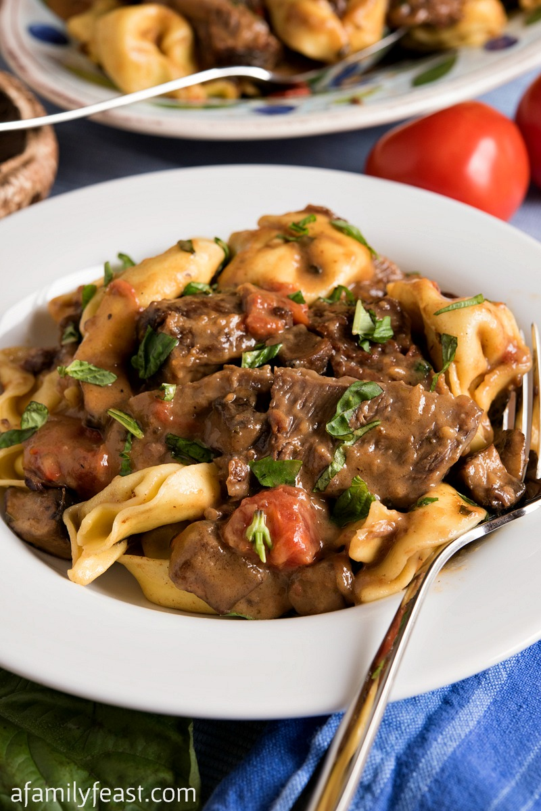

Braised Beef and Tortelloni

Description
After ordering this almost every time I ate at Olive Garden
for years, I was very upset that they retired it off the menu.
I combed the internet for a good copycat recipe, and oh my God,
this was it! It takes some time to prepare, but isn't nearly as
complicated as the steps appear once you make it, and it is so
rich,decadent, and filling. It also works wonderfully with
creamy mashed potatoes and green beans in place of the pasta!
Ingredients
- 3 to 4 pounds short ribs, bone left on **see note below
- teaspoon kosher salt
- 1/2 teaspoon freshly ground black pepper
- 3 tablespoons extra virgin olive oil
- 1 cup sweet onion diced, such as Vidalia
- 1/4 cup fresh basil, chopped, plus more for garnish
- 1 cup marsala wine (do not use the Marsala cooking wine from
the supermarket, get real Marsala drinking wine)
- 1 1/2 cups beef stock (store bought is fine, or see here)
- 1 cup water
- 1 bay leaf
- 2 large portabella mushroom caps *see note
- 2 plum tomatoes, cut into eight pieces
- 1 tablespoon balsamic vinegar
- 2 tablespoons butter
- 3 tablespoons all-purpose flour
- 1/4 cup heavy cream
- 1 20-ounce package Asiago-filled fresh tortelloni (or any
fresh cheese-filled tortelloni available at your market)
Steps
- Preheat oven to 375 degrees F.
- Salt and pepper all sides of the short ribs.
- In a large Dutch oven or heavy bottomed oven proof pot with an
oven proof lid, heat the olive oil over medium high heat.
- Add the beef ribs and sear on all six sides for 2-3 minutes per
side. Remove the seared meat to a platter and pour off all but
two tablespoons of the fat remaining in the pan but do not
discard the remaining fat. More will be used later in this
recipe.
- Add the onions and sauté for three minutes. Add the basil and
cook for one more minute then add the marsala wine.
- Reduce by half then add the beef stock, water and the bay leaf
and add the seared ribs back into the pan. The liquid will not
cover the tops of the beef. Cover and place in the oven for two
hours, untouched.
- While the beef is braising, in a large skillet, add 2 tablespoons
of the reserved beef fat and once hot, add the mushrooms. Sauté
for 5-6 minutes or until tender.
- Add the tomatoes, cook for one minute then add the balsamic
vinegar. Cook for one more minute and remove from heat. Set aside.
- After two hours, remove the pot from the oven and pick the beef
pieces out to your cutting board with tongs. The bones should
slip right off and be discarded. Once they are cool enough to
handle, use a sharp knife and remove fat and gristle from the
beef. Cut the remaining beef pieces against the grain into slices.
- Place a large pot of water on to cook the tortelloni while you finish
the dish. The tortelloni takes about 6-7 minutes to cook, assuming you
are using fresh.
- In a small sauté pan, melt butter and once melted, add flour. Cook for
three minutes over medium heat and then remove from heat.
- Heat the liquid left in the pot of beef over medium high and once it
starts to boil, add the butter and flour mixture and whisk to combine.
Once thickened, add heavy cream and whisk again. Add cooked sliced beef
and cooked mushrooms and tomatoes from earlier. Stir to combine.
- Drain the cooked tortelloni and add back into the pot it was cooked in
and add a little of the finished sauce to coat.
- Pour the tortelloni into a serving platter and pour the finished braised
beef over the top.
- Garnish with some chopped fresh basil.